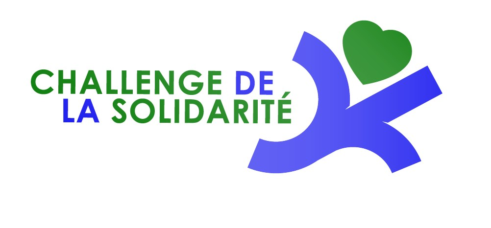

Courir pour soi c'est bien. Courir et donner son souffle pour ceux qui en ont besoin c'est mieux !

Voilà l'esprit de ce Challenge : l'ensemble des bénéfices des épreuves est reversé au profit d'œuvres humanitaires.
Saison 2026
Guingamp
1 févrierPloumilliau
26 avrilBelle-Isle-en-Terre
31 maiPerros-Guirec
7 juinLouargat
27 septembreTrévou-Tréguignec
8 novembreTréguier – La Roche-Jagu
Saison 2026
Le Challenge comprend 7 épreuves. Pour être classé au Challenge, chaque participant doit obligatoirement participer à au moins 3 courses.
Le classement final est établi en prenant en compte les 3 meilleures performances réalisées sur l'ensemble des épreuves.
Un classement par points est établi après chaque épreuve. Les points sont attribués sur la base du classement scratch hommes et femmes (toutes catégories confondues), selon le barème suivant :
1 point pour la 1ère place, 2 points pour la 2ème place, 3 points pour la 3ème place, etc.
Le classement général est déterminé par l'addition des points (le total le plus faible étant le mieux classé).
Seront récompensés : les 3 premiers hommes et les 3 premières femmes.
Tous les finishers recevront un lot et seront invités à la soirée de clôture en fin d'année.
Les participants doivent adopter un comportement respectueux, sportif et solidaire envers les organisateurs, les bénévoles, les autres participants et l'environnement. Tout manquement pourra entraîner une disqualification.
Tout participant inscrit mais non classé (abandon ou non-arrivée) se verra attribuer un nombre de points équivalent à celui du dernier, majoré de 200 points.